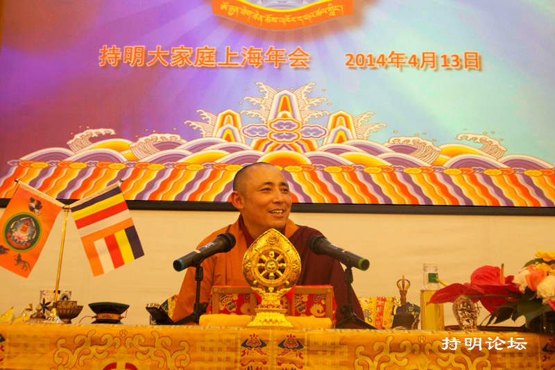

持明禅修中心首届佛学讲座
(在殊胜佛日里，宁玛大乘邬金法乐洲首届佛学讲座在上海如期举行。上师主要围绕着佛法的教言如何指导我们的生活，此生我们如何变得更加慈悲和智慧，以及今生怎样生活才能更加有意义这些主题进行了开示。)

今天的共修特别殊胜，大家念诵得很有秩序，这是宁玛大乘邬金法乐洲第一次在大型活动场所举行共修，能够在这么舒适安静的环境里做大型荟供，我非常高兴！我们今天修的是作明佛母法，我想一定是这个缘故，一切才会这么顺利，以后大家要经常修作明佛母法，可以迅速增长世间和出世间的福报资粮。
这次的大型共修活动和前两天的大放生，上海的组长们非常的辛苦，大家有目共睹。放生那天，虽然下着大雨，路程也比较远，但我们放生的进度一点也没耽误，放生活动非常圆满！今天的共修也是这样，他们为此精心准备了很久，对于在座的大部分弟子来说，来参加这次共修是很简单的事情，组长们已经为你们的行程做了周密的安排，你们只是准时到达就可以了，没有其他的工作需要你们做，你们享受的是一次“高大上”的共修。现在外面有很多佛教圣地、寺院，但大多数人到这些地方都只是流于表面，做做形式上的拜佛、烧香，并没有真正去做一些利益众生的事情；而像我们这样发心清净，在全国很多地方都有这样一个如法修行的团体，是非常难得的！想一想当初我刚来汉地的时候，大概只有不到十个人认识我，发展到今天，这里已有一百多名皈依弟子参加这次共修；另外，鉴于我们是第一次在这里举办大型的活动，为了保证此次共修如法顺利，没通知更多的弟子来到这里，因此大家一定要珍惜这个来之不易的机会。
生命是宝贵的，也是难得的，失去这一切却是非常容易。希望大家一定要好好的利用时间！要多多参加放生、持咒、念经，这是修行的主要功课，但更重要的是要多帮忙别人、利益众生！比如影响身边的家人、朋友学习佛法，鼓励他们参加放生，帮助那些想学佛的有缘人接触佛法，做好他们的领路人。我们是修密法的团体，是大乘、金刚乘的发心，修行的目地就是早日生起出离心、菩提心，然后帮忙他人、利益众生，这就是我们此生最重要的事情！
大家记住，当我们在参加共修、放生的时候。不能流于形式。一定要如法地去供养、去念诵相关的仪轨，这样才有功德、有意义！否则会有过失！有的传承上师则教导弟子，不要办太多这样的活动，让大家多做一些闻思修。之所以会这样，是因为很多人喜欢搞形式上的活动，而不愿意去做一些实在的事情，连念经、持咒、闻思都不去做，怎么能修好菩提心、慈悲心呢？令我感到欣慰的是， 虽然我们的团体也有很多的活动，但大家都能如法地念诵，而且念的越来越专业。也有一些人觉得学佛很简单，只要念一句“阿弥陀佛”就可以解决所有问题，再不需要做其他的修行，也许他们并不懂得，如此简单的一句佛号，或是一场形式上的活动，怎能去除我们相续中这么多的污垢？又怎能使我们真正做到看破放下？这显然是不可能的；就像雍和宫这种大的寺庙，在过年的时候会有几万人进去烧香拜佛，当电视台记者采访这些香客时，每个人烧香拜佛的目的都是希望自己能够平安吉祥、升官发财等等，几乎没有人发愿是为了天下众生得到永恒的幸福、早日成佛，这是不懂佛法、缺乏闻思的表现，当然，他们念那么多数量的佛号，也是积累了一定的功德，但如果没有按次第如法的修行，是不可能修出菩提心的；只有通过闻思，才能懂得清净的发愿，当你真正有了智慧，吉祥平安会自然而然的降临在你身边。这就好比有烟的地方就会有火，有火的地方也一定有烟，二者密不可分。所以，我们无论做任何一件善事，哪怕是点一盏灯，焚一炷香，都要发大愿，所做的功德回向众生，这样的发心，功德不会减少，反而会增加，我们分享的越多，得到的也会越多。这里在座的很多弟子跟随我学佛多年，大家可以观察下，他们做了这么多利益众生的事情，智慧、慈悲心是不是越来越多了？他们不单福报增上,同时也越来越懂得知足和感恩，这就是因为他们发心清净，并没有想为自己求得更多的名声、财富。如果佛法演变成让世人获得各种欲望的手段与途径，很多人会通过学佛满足自己自私的心理，并不是想获得真正的智慧，那么佛法就会很快没落，不会有人再学佛了。
还有另一种人对我说：我已经拥有的很多，再没有什么可求的东西了，所以我不用学佛，做个好人就行了，念咒、做功课，这些都太麻烦了。是的，可能目前他的一切都很顺心如意，这是有福报的表现，可是不要忘记高极必堕、聚极必散这些道理，这是事物的发展规律，谁能保证五年、十年之后还会保持这样的状态呢？不要遇到了困难才想起修行，种什么因得什么果，在因果现前的时候我所能给予的帮助是有限的，只有尽早修行，开始行善，播种福田，福报才会取之不尽、用之不完。这种人往往有一个共同毛病，可能是因为事业比较成功，所以有很重的我执，只相信自己的判断，道理说了很多遍，但还是没有多大的改变，其中有些人不单对修行提不起兴趣，甚至觉得生活也没什么意思，然后用吃喝嫖赌来填补内心的空虚，这样的人不在少数，为什么会这样呢？这就是没有信仰没有智慧的原因，自以为很强大，天不怕地不怕，他们根本不明白，财富、名声、权利拥有的再多，也不会使无常放慢脚步，无常不会因你是成功人士就会对你网开一面；当无常来临的时候，越是所谓成功的人就越会感觉到恐惧，那些以前天不怕地不怕的人这个时候也变得很脆弱，他们害怕失去眼前的一切，对财产、亲属、名望都非常的执着，最后堕落到何处佛经里说的很清楚。所以，我希望大家马上行动起来精进修行，这是我能够给与你们最大的帮助；如今是人类千百年来最富足的时期，科技空前发达，通过网络就可以获得各种信息，为修行提供了各种助缘，你们修行所需的所有条件都具备了，拥有这样的生活你们应该感到幸运，这也是你们前世积累的福报，如果不去珍惜，总有一天你会失去这些。就像蜜蜂在花朵里忙碌，它把所有的精力都用在采集花蜜上，并不知道有一天花儿会枯萎，自己将会死去。那些不肯修行的人与花朵里的蜜蜂一样，对将来的变化一无所知，很多人会觉得死亡离自己还很远，不用着急去考虑它，但是谁能保证下一刻、下一月、下一年，一切都还像此时此刻一样呢？今天两个人还亲近有加，明天就反目为仇，这种事情举不胜举，这就是无常。即使你当下觉得生活是美好圆满的，但是这一切都是暂时的，所以我们要抓紧时间修行，这样的人生才有价值。
现在很多人生活的圈子都非常的小，视野也很窄，像有些老年人，大多的时光都在公园里聊天、打麻将中度过，这是非常可惜的！我曾经带母亲到成都看一看，老人家看见那些聚集在公园里的老人，一句“阿弥陀佛”也没有念，满嘴都是家长里短，时光却悄悄地流逝，死亡在静静等待着他们。母亲特别怜悯这些老人家，觉得他们都好可怜，我笑了笑跟母亲说：“或者他们会觉得您才可怜，藏地的条件艰苦、物质匮乏，他们认为只有生活在城市里的人才幸福的呢！”而母亲觉得每天可以烧香拜佛，转山转塔，这样的生活才是有意义的。两种不同的世界观，导致不同的生活态度，最后获得的结果也一定不同。
有些弟子学佛以后，能逐渐感受到佛法对自己的改变，也希望家人、朋友一起学佛。但那些亲朋好友因为过去所接受教育的原故，对佛法往往有不正确的认识；或者有的父母即便心里认可佛法是好东西，傲慢心却使得他们在表面上不会轻易承认，总觉得我年纪比你大，生活的经验比你多，怎么能轮到你来指点我呢？当我们遇到这种情况该怎么办呢？记住：学佛先要做人，要具足美好的品德和高尚的智慧。与家人、朋友相处的时候，要懂得忍让，在不违背原则的前提下随顺众生，跟不懂佛法的人不要太计较，学会讲道理，不要让他们生起烦恼，让他们看到学佛人的宽容大度，这样才能慢慢影响到身边的人。比如夫妻二人，有一方暂时没信佛，以前周末时两人还一起做家务，但是，另一方开始学佛以后，就“放下”了家里的所有事务，执着于念咒、磕大头、做功课，不再关心家里的事情了，这就需要调整改变。虔诚修行本来是好事，但时间一定要合理安排，才不会引起夫妻间的矛盾。对于佛弟子来说，生活离不开修行，而一个好的佛弟子在修行中也一定离不开生活这个对境，佛法是圆融的，修行和生活并不矛盾，大家不要轻视做家务，当你做这些家务的发心是为了让家人欢喜，最终引领他们走上学佛的道路，那么你所做的家务就是一种功德，也是功课之外的另一种修行，更是利益众生；有人也许会认为做太多的家务会占用做功课的时间，可是时间总是可以挤出来的，少看一点手机、少看几部韩剧，就会省出很多时间。生活不能堕两边，把修行所学到的智慧运用到生活中，只有这样才能逐渐的影响到家人，让他觉得学佛是一件好事，从而生起欢喜心，他们也会成为你修行中的助缘。
你们自从跟随上师学佛起，就开始行持善法，利益众生，这一定是前世种下的善根，否则今世不会有缘遇到佛法，更不会念佛、放生。在我小的时候，家里几个兄弟当中，我最喜欢红色袈裟，那时条件艰苦，找不到袈裟，我就把红色的衣服当做袈裟穿在身上，然后垫一些石头坐在上面，假装讲课，那时尽管我不会念经文，还是振振有词的念一些谁也听不懂的东西，对面放了很多的小石头，当做是自己的弟子（哈哈哈）；华登堪布和我一起长大，我们经常用木棍敲盆子，一起念经，堆起很多石头当成玛尼石墙、修建舍利塔，然后我俩一起给它们开光，拿一些小石子代替大米洒向石堆，因为我俩见过老喇嘛在开光的时候会撒米，米里面是加持过的咒语，米撒在哪里，加持力就随之到了那里，我们觉得这样很开心。佛经中也有说过，如果前世种下了与佛的因缘，这一世从小时候你就会有感觉，有强烈的愿望去接触佛法，这是千真万确的！记得有一次，父亲给我买了一个红色的小猪，我和华登堪布就去把它放生了，现在想想这真是不可思议！今天我带领这么多弟子学佛，而华登堪布到各个寺院讲课，我们从小的兴趣爱好，决定了我们长大后人生的努力方向。
今天看到你们念得这么整齐，我很高兴！最初带着大家学佛的时候，《八圣吉祥颂》你们念得都不熟练，也不明白是什么意思，很多初学的弟子非常羡慕我能够把《八圣吉祥颂》、《大自在祈祷文》等佛经念得那么熟练。你们从小到大读过不少的书，可这些书大多是对人生没有什么意义的，对来世更是毫无帮助。我们藏族人从小就开始学习《普贤行愿品》、《八圣吉祥颂》、《大自在祈祷文》等众多经文，我们所学的知识都是来自于佛法，不是世间法。如今，藏传佛教越来越兴盛，已经成为佛法的核心，这是什么原因呢？是因为纵观佛教在世界的发展历史，藏传佛教是唯一没有被污染、一脉传承下来，无论是在其他国家，还是在汉地，佛教都有被破坏的历史，很多的佛法经典已经失传；而在藏地很多人通过修行密法证悟空性、虹光成就，无论在以前，还是现在，出现过很多这样的大修行者，这是真实存在的，并不是神话故事。由于过去藏汉两地的文化存在一定的差异，连接两地的道路既漫长又艰险， 使得藏地和藏传佛教自古以来给人一种神秘感，后来有很多人开始去藏地研究这种神秘，这其中多数人并不是去探寻藏传佛教中的慈悲与智慧，而是一种猎奇的心理，但也有一些西方人、汉地人来到藏地后对藏传佛教产生了信心，通过修行自身得到了很大的改变，这使得他们对密法的研究越来越深入，藏传佛教也得到了更广泛的传播。
时间过得真快！现在全国有这么多人跟着我一起放生，我们的放生已经进入了第八个亿，今生我们念佛、放生，虽然过程辛苦，但是结果是开心的。当初我发愿放生的时候，哪怕能放一千个生命都非常的开心、激动，我有时会想：什么时候能放一亿个生命呀？这对我来说，简直就是天文数字！再看看今天，我们一年就可以放一亿多个生命，并即将圆满第八个亿的放生；全国现有二十多个放生组，人多力量大，大家发心清净，更有佛菩萨、传承上师的加持，才让我们有了这样殊胜的成就！但我从未想过这些功德是我个人的能力和智慧的结果，只是我有足够的耐心，把自己跟随高僧大德们所学到的善知识都传授给大家。就像建造文武圣大解脱宫殿，今年先后上去两百多人去参加建设，大家有钱出钱，有力出力，特别虔诚的去做这件事情，很短的时间就竣工了，这在世间人来看是不可想象的，我们创造了奇迹。在这过程中，大家都很辛苦，当看到完工后的解脱宫殿，喜悦是无可比拟的，这一世我们播种了这么殊胜的福田，多难得啊！我越来越觉得自己的时间宝贵，而且人生有意义；大家供养的财富支持我做了很多的善法，我一定不能浪费这些宝贵的财富，我也经常祈请传承上师加持我，让我把所拥有的一切财富尽可能地用于行持善法、利益众生。
下面我再谈一谈修出离心的问题，很多人并不明白其中的道理。有些弟子皈依以后，一年11万遍的四皈依都没能按时念完，还幻想着自己能获得什么样的成就，怎么可能呢？就像大家读书要从小学、初中、高中、大学逐步完成，循序渐进地学习才能获得学位。学佛也是需要一个过程，按次第修行才能生起真正的出离心、菩提心。我遇见过一位弟子，学了几年佛以后，觉得自己领悟到了出离心，执意要出家，几年后受不了出家的苦，又回到家里；由于散乱的心绪让他回来后，连最初在家修行、学佛的状态都荡然无存了，这是非常可惜的。这就是出离心没有修好的原因，是一时冲动的行为，不可借鉴。出家没有你们想的那么容易，只要你们按时完成我每年给你们布置的功课，精进闻思修，一年、两年、十年以后，你们会惊讶发现自己正在变得美好，最终一样可以获得圆满成就。
在这里跟大家分享一个关于出离心的故事。蒋杨钦哲仁波切在德格的时候，华智仁波切正以乞讨的方式四处云游。他有一个木碗，伴随他同甘共苦，浪迹天涯，走遍了康藏地区的山山水水，因此华智仁波切十分喜爱它。当他去拜见蒋杨钦哲仁波切时，见到上师的周围眷属云集，房间富丽堂皇，宛如宫殿一般，里面装满了各种金银财宝，心里想着：原来上师也很喜欢财物，这满屋的珍宝他一定很执着吧！蒋杨钦哲仁波切以神通照见了他的心思，便一语中的地高声喝道：“华智，你不要想得太多！我对这室内室外财宝的执着，远远不如你对你那木碗的执着!”一句话使华智仁波切心中豁然开朗，他恍然大悟：修行人并不一定都要过苦行僧般的生活，最重要的是要放下执着。可能有些弟子会担心生活在世间，如果真的放下了，会不会有一天因没有了上进心而失去工作；其实，对于一个有智慧的修行人是不可能的，修行是让我们看淡世间的名利财富，能够拿得起放得下，不过分的执著；当你有了出离心、慈悲心的时候，就会更多地去帮助别人，福报也会随之而来，在利益众生的发心下，努力工作也是修行，所以是不可能因此失去工作的，自己修来的福报永远都属于你自己，没有福报的人，无论如何追求世间的名利，也不会获得。
出离心是修行的基础，希望大家要重视，要经常观察自己的心处于何种状态，修行人的心有三种境界：第一种境界，是你尚未或刚刚接触到佛法时，心是散乱的，如瀑布之水，急躁、散乱；第二种境界，是你有了一定的闻思修后，心开始变得调柔，如高原之水，平缓、清净；第三种境界，是你精进修行更为高深博大的佛法之后，心是慈悲的，如大海之水，广阔、包容。在座的各位可以对照一下，自己现在心处于何种境界，然后就会知道接下来自己要做什么样的修行了。持咒、观想、打坐、磕头都是非常好的修行方式，没有这些善的因，就不会有最终善的果，你们只要精进修行，最终你们的心会如大海之水一样的广阔包容！
今天能在这么殊胜的会场跟大家讲法，我很放松，以前在汉地传法非常压抑，人太多会担心，不敢说太大声，怕惊扰到其他人，每次从汉地经由成都回到藏地，我都觉得进入到了另外一个世界，觉得非常的舒畅，其实世界还是一个世界，只是心境变了而已。生活在都市的人压力还是非常大的，很容易起嗔恨心和不满足的想法，又无法排解，只有学佛才是真正的解脱之道，才能让浮躁的心真正的平静下来，获得自在，所以现在有越来越多的人喜欢和向往佛法，只是还不具备这样的机缘，我希望将来能带领更多的人学佛，就像台湾很多的高僧大德那样，可以在体育场开法会传法，如果那样佛法传承就会更加广大，会有更多的众生获得解脱！
希望你们在未来的修行路上，互相团结友爱，像一家人一样和睦相处，这是最能令我欢喜的！金刚道友之间不要相互诽谤，也不做违背上师的事情，大家要珍惜宝贵的时间，精进闻思修佛法，这很关键！没有人不精进修行就能立即证悟空性，只要踏踏实实地修行，不一味贪求更高深的法，认真遵循佛陀的教导，我相信每一位佛弟子最终都可以获得圆满的成就，今天的开示就到这里，谢谢大家，吉祥如意！